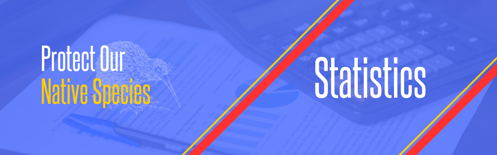

From declining bird populations to disappearing wetlands, the statistics tell a sobering story. Dive into the data that reveals trends in biodiversity loss, conservation efforts, and the ecological footprint shaping the future of New Zealand.
PONS NZ [Statistics]
Home
Impact
Statistics
Solutions
Contact Us
